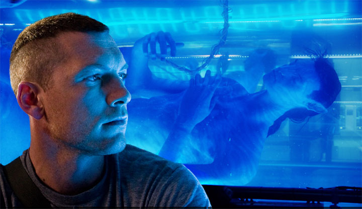

La Naturaleza de Avatar, primera parte, ¿donde estoy?
Tenía que hablar de Avatar. Aunque fui a verla el día después de su estreno, no había tenido tiempo de escribir nada sobre esta película, además es algo que le prometí a mi hijo.
Ahora que me puedo hacer un tiempito voy a escribir un par de cosas sobre Avatar, he decidido atacar por varios puntos de vista, así que es probable que escriba más de un artículo.
Esto que viene no es crítica de cine, es tecnología, es mi visión como desarrollador de software sobre Avatar, y sus propuestas. Estos artículillos asumen que ya vieron Avatar, y si no la han visto véanla, ojalá en 3D.
La primera parte arranca de un excelente artículo de Tercera Cultura, que parte de una pregunta epistemológica interesante, expuesta por Remis Ramos, quien explora el problema de donde aloja la conciencia de Jake Sully cuando “opera” al ávatar, siguiendo el argumento de Daniel Dennet expuesto en su ensayo “Where I Am”.

Al grano, el problema filosófico planteado por Tercera Cultura es el siguiente:
Jake Sully es un ex-marine que es reclutado para encarnarse, o transferir su mente a, o telecontrolar temporalmente a un avatar, creado a partir del ADN de su hermano gemelo y el ADN de los Na'vi. Llamemos Yeik'Suli* (actor digital en la película) a su encarnación azul, a este híbrido genético de casi tres metros. Llamemos, respectivamente, *Jake a la mente de Jake Sully, Lleic al cuerpo original (parapléjico) de Jake, y Yeik a su avatar.
La premisa es que cuando Jake entra a la máquina y se “conecta”, o bien:
1. Asumimos un [dualismo](http://en.wikipedia.org/wiki/Dualism_%28philosophy_of_mind%29), y decimos que Jake es **trasladado** a Yeik (como si su "alma" saltara de una "glándula pineal" cartesiana a otra)
2. Asumimos un [funcionalismo](http://en.wikipedia.org/wiki/Functionalism_%28philosophy_of_mind%29) y decimos que Jake es **replicado** o **instanciado**en el sistema nervioso de Yeik (es decir, que al iniciar el proceso se saca un snapshot del estado funcional de Jake y este se inplanta en el cerebro de Yeik)
3. Asumimos que Yeik no tiene sistema nervioso (o este está inutilizado) y se trata de un dispositivo que sirve de **control remoto**, y Jake nunca "sale" de Lleic, sino que sólo controla el cuerpo, y recibe de vuelta los estímulos sensoriales, en un loop sensomotor no explicado
4. Asumimos que Yeik tiene un sistema nervioso estructuralmente idéntico y compatible, y que lo que sale de Lleic es una **configuración** (valores de activación, conectividad neural, etc.) hacia Yeik, y que cuando Jake vuelve a su cuerpo original, esta configuración se "actualiza" en el cerebro de Lleic.
Ante el caso 1 debemos preguntarnos cómo es posible que el alma se transfiera a través de un aparataje tecnológico.
El caso 2 no tiene sentido: “¿Porque no mejor hacer una copia de Jake, ponersela permanentemente a Yeik, y que de ahí en más cada uno siga su camino? "
El caso 3 parece más plausible, pero entonces “¿como es posible que se pueda hacer un traspaso definitivo? En este escenario, la mente de Jake nunca sale (ni puede salir) de Lleic. Lo unico que entra y sale son sus inputs sensoriales y sus outputs motores. Hemos de asumir entonces que la única forma de hacer un traspaso definitivo es con un transplante de cerebro”
Y en el caso 4 estamos en realidad ante el mismo caso 2, con “la diferencia que en el 2 se concibe a Jake (la mente) como siendo idéntica con los estados funcionales del cerebro de Lleic, y en el 4 como los estados neuronales físicos. Lo que tenemos en ambos casos es una confusión ontológica, quizás derivada de una aplicación inpropia de la metáfora “mente/cerebro como software/hardware”.”
Las dos preguntas interesantes que surgen son “¿Dónde está realmente Jake cuando controla a Yeik?” y la segunda es " ¿la mente de Jake es el funcionamiento del sistema nervioso de Lleic, es un patrón funcional abstracto que se puede replicar en otro hardware (como Yeik, o un robot, etc.), o es un fenómeno metafísico?”
No es fácil responder esto porque la película es confusa, no nos dice que tipo de información es la que viaja desde el cuerpo de Jake al de su Avatar, con lo que podríamos resolver el problema, al contrario da pistas que pueden apuntar a cualquier parte, incluso según nuestros sistemas de creencias.
Yo no soy filósofo, así que dejo el problema a los expertos, pero...
Para Remis Ramos la película no es espiritualista:
Por mi parte, mi tesis es que Avatar NO ES una película espiritualista, es una películaTercerista. La clave es la siguiente: Grace (el personaje de Sigourney Weaver) descubre que efectivamente en Pandora lo que sucede es que los árboles se comunican entre sí como si fueran neuronas en un sistema nervioso. Y que los Na'vi se pueden conectar (literalmente) a esta base de datos de su especie, en la cual residen las mentes o los recuerdos de sus ancestros. No se trata de almas y cuerpos irreconciliables, se trata de explicar a través de la ciencia lo que los Na'vi viven a través de su fe y su cultura, sin eliminar el fenómeno explicado, sino que integrándolo con los otros niveles de explicación. La gracia es exactamente esa. Ni reduccionismo eliminativo, ni relativismo epistemológico: lo que se busca es integrar en un todo coherente los distintos aspectos aparentes de la realidad, que en el fondo es una sola.
Yo creo que hay algo que no está dicho en la película, y que tiene que ver con la clave de la que habla Remis Ramos. Yo sospecho que Cameron se las trae, y que en realidad está aplicando la tercera de Ley de Clarke: “Toda tecnología suficientemente avanzada es indistinguible de la magia”.
Tengo la sensación, porque comparto la sospecha de J.C. Barroux, de que nada en Pandora es natural, porque la evolución no explica el extraño ecosistema de ese planeta. Eso me lleva a pensar de que probablemente estamos ante la presencia de una tecnología muy avanzada, y que todo el planeta parece estar diseñado (lo que vuelve inquietante la propuesta de Cameron, en todo caso no creo que él apoye una idea como la del diseño inteligente).
Si es así, si estamos ante una tecnología muy avanzada, entonces el traspaso definitivo de la mente de Jake al cuerpo de Avatar es posible.
A mi me gusta pensar que la idea expuesta por varios físicos modernos, como Seth Lloyd, de que el universo es información, es correcta.
Probablemente en unos años más la física pase a ser una rama más de la teoría de la información, y podamos dar una respuesta concreta al problema planteado por Dennet, y reformulado a partir de esta película por parte de Ramos.
Si todo es información, entonces la transferencia del alma parece plausible, ¿ o estoy muy equivocado?
Tengo que agradecer a este post de Tercera Cultura, porque me hizo pensar mucho, por haberme mostrado este interesante problema. y que desarrolla el filósofo Daniell Dennet. Si les interesan estas cosas, sugiero leer el artículo recomendado por Remis Ramos.
Queda en el aire el problema de la tecnología de Pandora.